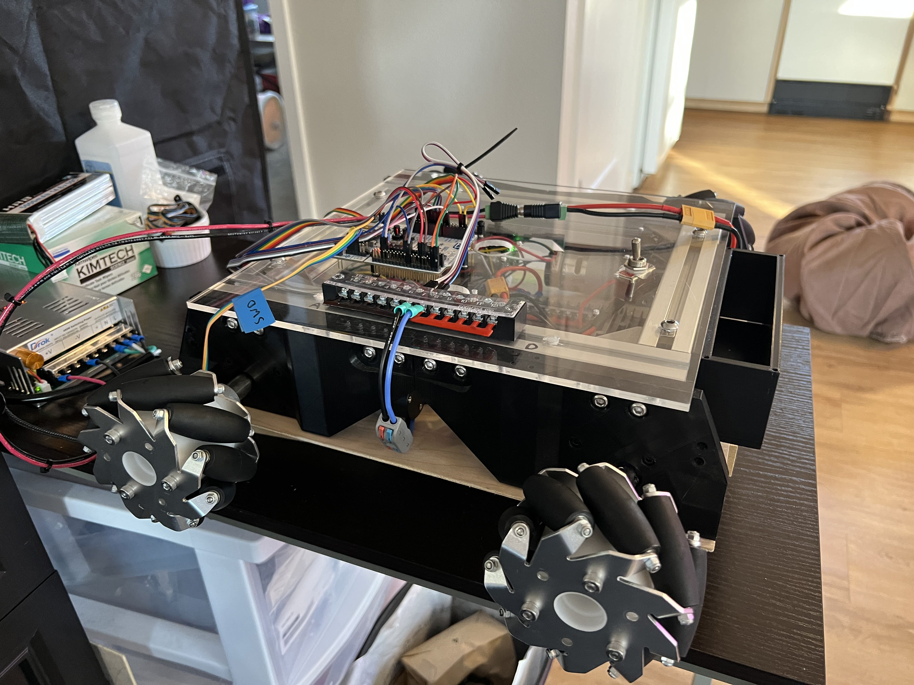
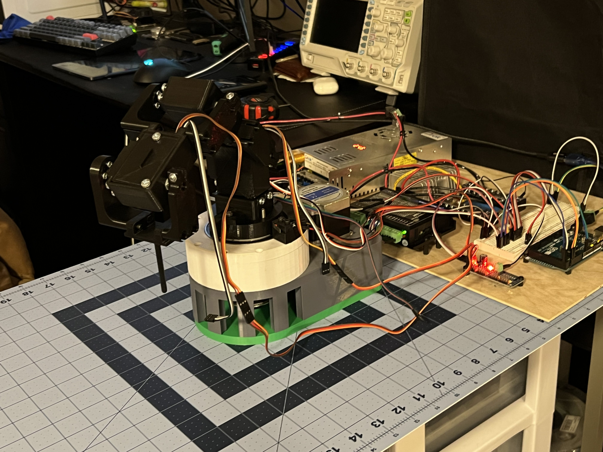
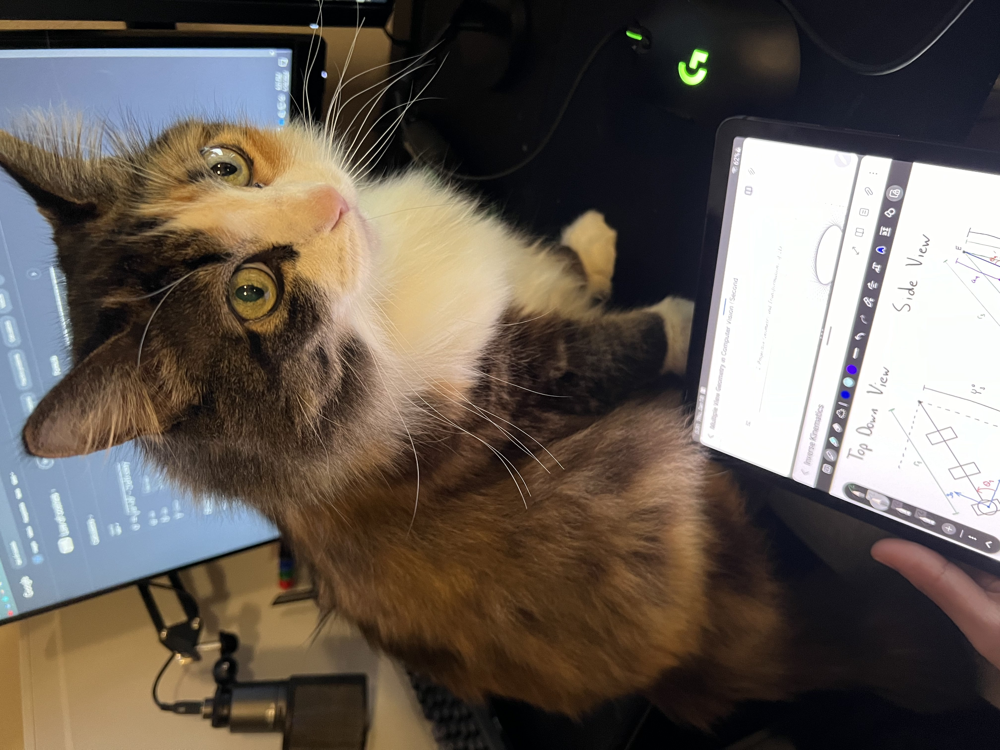

The mage hand
(or the articulated robot on wheels)
For those that I already lost at the title, Baldur's Gate 3 (DnD) has a spell that summons a mage hand that can interact with the world to move objects. By combining two of the robotics projects I've been working on, it seems feasible to make a robot that can interact with the world by maneuvering to items around my apartment and picking them up for me. Off the top of my head, I can see this involving some sort of path planning with LiDAR to avoid obstacles while searching for objects, object detection with a camera to locate items of interest, and some fancy kinematics to pick up the item and return it to me. I'm sure there will be several issues with this model down the road, but figuring out how to get it to work is the half the fun.
This idea only truly came to mind after already having the hardware for the two critical robot systems which are entire projects in their own right. First, there's the robot car that I dubbed Altair and was originally intended to be a glorified roomba. Then, there's the articulated manipulator I dubbed Vega intended for pick-n-place activities.
Altair, the aspiring roomba
The robot Altair will use LiDAR, an inertial measurement unit (IMU), and encoders on each of its mecanum wheels to autonomously navigate my apartment while avoiding obstacles. Since I last worked on Altair, I was able to get simple PID control working using four BDC motors with hall effect encoders. When I gather the strength to take Altair out of storage and into the clutches of my cat Popo, I'll be hooking up the LiDAR and IMU and making it worthy of the name roomba.
For those interested in hearing about the electrical and mechanical aspect of designing Altair, I'll give you the rundown. The design of the chassis is largely inspired by work done by Jakob Friedl for his ROBOOST platform, though it required significant adaptations to suit my electrical and mechanical needs. The motor and battery fixtures are 3D printed in PLA and are secured onto a frame composed of aluminum extrusions. A lithium ion polymer battery provides 14.8V as well as 5V to the entire system after passing through a linear regulator. The power electronics are mounted in the interior of the body and distribute the energy needed to drive each motor, and power the microcontroller unit (MCU) and single board computer (SBC) on the navigation layer.
On the navigation layer, the two main components are the MCU and SBC. The MCU takes as input a desired position and velocity as well as feedback from the encoders, then outputs the appropriate pulse width modulated (PWM) signal to drive each motor using a PID controller. The SBC will be communicating with sensors including a LiDAR, IMU, and cameras to perform simultaneous localization and mapping (SLAM), path planning and trajectory generation. It will then communicate this trajectory to the MCU to drive the actuators accordingly. The specific MCU that I'm using is the STM32F401RE on a NUCLEO board of a similar name that I chose for the sake of convenience. The specific SBC that I'm using is the Jetson Nano which I chose primarily because I had used it before. This did not stop me from running into endless problems setting it up to run with CUDA enabled and was the inspiration I needed to learn how to use Docker. If you want to avoid that same issue, maybe use a Raspberry Pi.
After all this is implemented, and with the blessing of foresight early on in the design when specifying the drive motors, we might be able to slap a robot arm on top and call it a "mage hand". Before that, though, we need to start with "hand"... or arm.
Vega, the articulated manipulator
The robot Vega will use a chain of rotary joints composed of a stepper and several servo motors to grasp objects that it can recognize and localize using a camera. Since I actively started working on this project, I spent lots of time designing the electrical and mechanical aspects of the arm. At the latest, I have implemented inverse kinematics and am able to position the end effector given a set of cartesian coordinates and angle for the end effector.
On the mechanical side, the robot is composed of a shoulder joint and several arm joints printed in PLA. The shoulder joint utilizes a cycloidal drive driven by a stepper motor which rotates the entire arm about the initial z-axis (frame zero). Then, each arm joint is driven by servo motors to achieve various configurations within its workspace.
On the electrical side, the entire system is powered by an external power supply providing 24V to drive the stepper motor and is regulated down to 5V to power just about everything else. Both the stepper and servo motors have their own motor driver boards. For the stepper motor I am using a DM556T, whereas for the servo motors I am using a PCA9685.
Each motor can be driven to a particular angle given by the MCU which will be receiving joint angles derived through inverse kinematics on an SBC. By computing the Jacobian matrix for my particular kinematic model, I will further be able to perform path planning and trajectory generation to reach items localized either by color subtraction techniques or a fully-fledged object detection model trained on my items of interest.
Conclusion
Though this project has yet to be finished, I am quite happy with the progress I have made thus far. I have enjoyed the process of working on system-level designs that span across the several disciplines. I'll be gradually adding relevant resources to the Notes section for things like kinematic equations as well as linking resources like CAD models and source code that might be helpful to others. You can rest easy knowing that my cat Momo has thoroughly reviewed my notes for any inaccuracies.